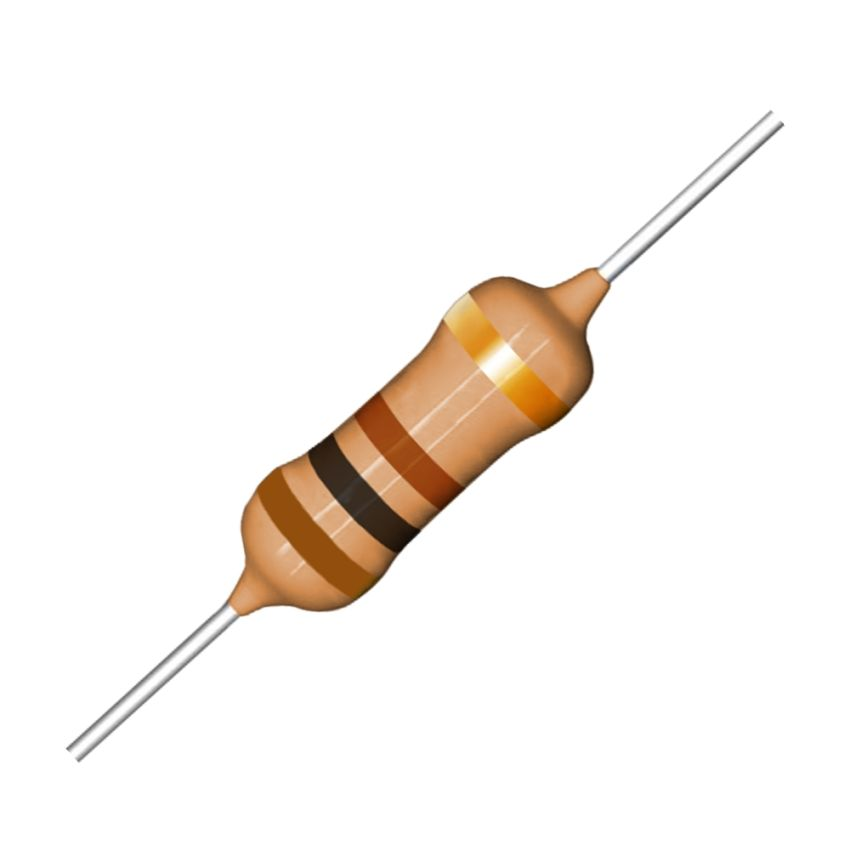
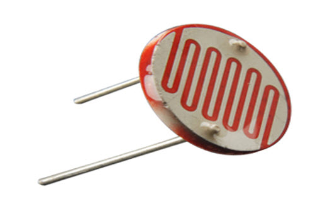

1. Componentes Eletrônicos
São dispositivos fundamentais para construção de circuitos.
• Resistor: limita corrente.
• LED: diodo emissor de luz.
• Transistor: chave/amplificador.
• Circuito Integrado (CI): conjunto de componentes miniaturizados.
2. Sensores em Automação
• Temperatura: mede calor (LM35, DHT22).
• Umidade: mede umidade relativa (DHT22).
• Luminosidade: LDR.
• Proximidade: ultrassônico HC-SR04.
3. Arduino: o que é, aplicações, vantagens
Arduino é uma plataforma de prototipagem eletrônica baseada em hardware e software livres.
Aplicações: automação residencial, robótica, sensores, IoT, controle de motores.
Vantagens: barato, fácil, grande comunidade.
Desvantagens: capacidade limitada comparada a microcontroladores mais avançados.

4. Como o Arduino funciona? Eletrônica Embarcada
Eletrônica embarcada envolve sistemas projetados para realizar tarefas específicas.
O Arduino utiliza um microcontrolador que lê entradas (sensores) e aciona saídas (motores, LEDs).

5. Linguagem utilizada no Arduino
A programação é feita em C/C++, através da IDE do Arduino.
Também é possível usar Python em placas como ESP32 via MicroPython.

6. Entradas e Saídas Digitais
Entradas digitais: recebem sinais 0V (LOW) ou 5V (HIGH).
Saídas digitais: enviam sinais 0V ou 5V para ativar dispositivos.
Exemplo: acender um LED, ler um botão.
7. Entradas e Saídas Analógicas
Analógicas: valores variáveis, não apenas 0 ou 1.
Exemplo: leitura de sensores como LDR, potenciômetro, LM35.
8. Lei de Ohm (V, I, R)
9. Cálculo de Potência (P)
10. Leitura Analógica e Acionamento Digital (Arduino)
// Lê sensor analógico e aciona LED
int sensor = A0;
int led = 8;
int valor = 0;
void setup() {
Serial.begin(9600);
pinMode(led, OUTPUT);
}
void loop() {
valor = analogRead(sensor);
Serial.println(valor);
if (valor > 500) {
digitalWrite(led, HIGH);
} else {
digitalWrite(led, LOW);
}
delay(200);
}
11. Diodo, LED e Display 7 Segmentos
Diodo: componente que permite passagem de corrente em apenas um sentido.
LED: diodo emissor de luz, usado como indicador luminoso.
Display 7 segmentos: formado por 7 LEDs internos que exibem números de 0 a 9.